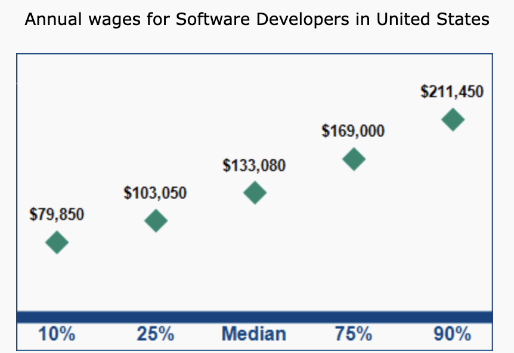
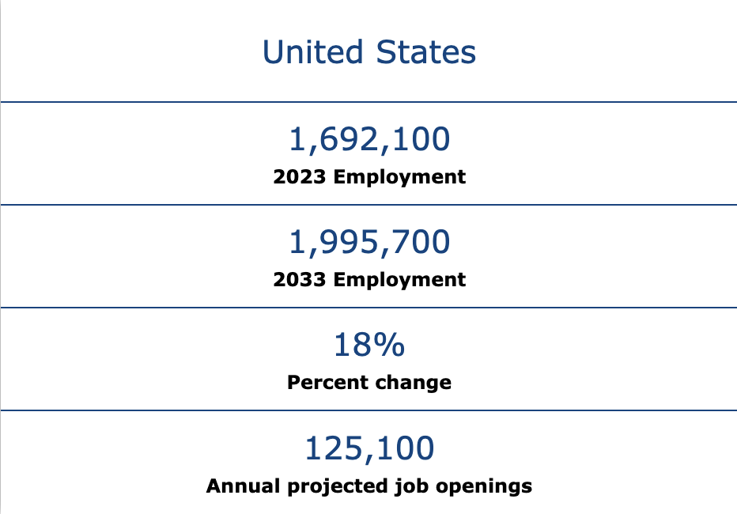

Job Market and Earning Potential
Software development jobs are projected to grow much faster than average (~15%+ nationwide through 2034).
Washington (especially Seattle/Bellevue/Redmond) has one of the highest concentrations of software developers in the U.S. with thousands of openings every year.
Oregon (Portland/Eugene) has a growing but smaller market, with startups and established companies expanding.
Demand is strong overall, but hiring can fluctuate with tech layoffs and economic cycles. Staying current with in-demand skills (AI, cloud, cybersecurity, etc.) is key.
Seattle area: ~$140k–160k average base salary; senior roles or big-tech positions can exceed $180k–200k+ with stock/bonuses.
Portland area: ~$130k–145k average; senior roles higher, though generally a bit less than Seattle.
Smaller PNW cities: Entry-level ~$70k–100k; mid-career roles can reach six figures, but usually below Seattle/Portland pay.
Pay is among the highest in the country, but cost of living (especially housing in Seattle) reduces take-home advantage.

